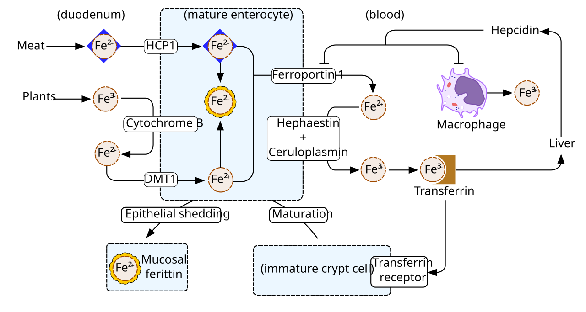

Hiện Tượng Thiếu Máu Ẩn Giấu: "Hemoglobin Bình Thường Nhưng Người Vẫn Kiệt Sức"
Hàng triệu phụ nữ năng động đang phải trải qua cảm giác bế tắc này: - Bạn cảm thấy cơ thể nặng như chì, leo vài bậc cầu thang đã thở dốc, tập luyện thể thao nhanh xuống sức và đầu óc lơ mơ thiếu tập trung. - Bạn đi khám tổng quát và làm xét nghiệm công thức máu (CBC), bác sĩ nhìn vào chỉ số Hemoglobin (Hb) và kết luận: "Chỉ số 12.2 g/dL hoàn toàn bình thường, bạn không bị thiếu máu đâu, chỉ là do mệt mỏi thông thường thôi". - Bạn trở về nhà nhưng cơ thể vẫn tiếp tục kiệt quệ từng ngày.
Tại sao lại có nghịch lý này?
Câu trả lời nằm ở sự nhầm lẫn giữa Hemoglobin (Sắt lưu hành trong hồng cầu) và Ferritin (Kho dự trữ sắt sâu trong tế bào gan và tủy xương).
Theo hướng dẫn lâm sàng của Hội Sản Phụ khoa Quốc tế (FIGO, Fraser et al., 2011) và các nghiên cứu y học thể thao của Giáo sư Peter Peeling (2014): Một người phụ nữ có thể hoàn toàn bình thường về Hemoglobin nhưng đã cạn kiệt Ferritin dự trữ—tình trạng này được gọi là Thiếu Sắt Không Thiếu Máu (Non-Anemic Iron Deficiency - NAID).

Kinh Nguyệt Ra Nhiều (Menorrhagia): Kẻ Trộm Sắt Vô Hình Hàng Tháng
Mỗi kỳ kinh nguyệt bình thường, cơ thể phụ nữ mất trung bình từ 30 đến 40 ml máu (tương đương khoảng 15 - 20 mg sắt nguyên tố). Đây là lượng sắt mà chế độ ăn uống thông thường hoàn toàn có thể bù đắp lại trong vòng 1 tháng.
Tuy nhiên, có tới 25%–30% phụ nữ mắc chứng Kinh Nguyệt Ra Nhiều (Menorrhagia / Heavy Menstrual Bleeding): - Lượng máu mất vượt quá 80 ml mỗi chu kỳ (tương đương mất đi 40 - 60 mg sắt mỗi tháng). - Các nguyên nhân thực thể hàng đầu: U xơ tử cung (Uterine Fibroids), Lạc tuyến nội mạc tử cung (Adenomyosis), Polyp lòng tử cung hoặc rối loạn đông máu vi thể. - Khi lượng sắt mất đi qua máu kinh lớn hơn lượng sắt cơ thể hấp thu được từ thức ăn, cơ thể sẽ buộc phải rút cạn dần kho dự trữ Ferritin. - Khi Ferritin cạn kiệt, các enzyme chứa sắt trong ty thể cơ bắp (Cytochrome C, Aconitase) không thể tổng hợp năng lượng ATP, khiến chỉ số tiêu thụ oxy tối đa (VO2 Max) sụt giảm nghiêm trọng và tim phải đập nhanh hơn để bù đắp.
Bảng Đối Chiếu Các Cột Mốc Xét Nghiệm Sắt Chuẩn Lâm Sàng
| Chỉ Số Xét Nghiệm | Ngưỡng Y Tế Tiêu Chuẩn (Standard Range) | Ngưỡng Tối Ưu Cho Phụ Nữ Vận Động (Optimal Athletic Target) | Ý Nghĩa Sinh Học Khi Bị Thấp |
|---|---|---|---|
| Ferritin Huyết Thanh (Serum Ferritin) | 15 - 150 ng/mL | > 50 ng/mL (Lý tưởng: 70 - 100 ng/mL) | Kho dự trữ sắt tế bào cạn kiệt. Dưới 30 ng/mL gây rụng tóc, mệt mỏi mãn tính; dưới 15 ng/mL là kiệt quệ hoàn toàn. |
| Hemoglobin (Hb) | 12.0 - 15.5 g/dL | > 13.0 g/dL | Khi chỉ số này tụt xuống dưới 12.0 g/dL, bạn đã rơi vào giai đoạn cuối: Thiếu máu nhược sắc vi hồng cầu. |
| Độ Bão Hòa Transferrin (TSAT) | 20% - 50% | > 25% - 35% | Dưới 16% phản ánh lượng sắt sẵn có để tủy xương tạo hồng cầu mới đang bị thiếu hụt trầm trọng. |
| Sắt Huyết Thanh (Serum Iron) | 60 - 170 mcg/dL | Dao động tự nhiên trong ngày | Biến động mạnh sau bữa ăn; không phản ánh chính xác lượng sắt dự trữ lâu dài. |
4 Dấu Hiệu Nhận Diện Kinh Nguyệt Của Bạn Đang "Quá Nặng"
- Phải Thay Băng Vệ Sinh Sau Mỗi 1–2 Giờ: Băng vệ sinh loại dày hoặc tampon thấm đẫm máu chỉ sau 1 đến 2 tiếng sử dụng liên tục trong ngày.
- Kỳ Kinh Kéo Dài Quá 7 Ngày: Chảy máu liên tục từ ngày thứ 8 trở đi.
- Xuất Hiện Các Cục Máu Đông Lớn: Thường xuyên tống xuất các cục máu đông có kích thước lớn hơn đồng xu 25 cent (đường kính > 2.5 cm).
- Hội Chứng Tràn Băng Ban Đêm: Phải thức giấc giữa đêm để thay băng vệ sinh hoặc phải lót thêm khăn dày vì máu tràn ra nệm.
Giao Thức 4 Bước Bổ Sung Sắt Chuẩn Y Học Thể Thao
- Yêu Cầu Xét Nghiệm Toàn Diện: Đừng chỉ xét nghiệm công thức máu CBC thông thường; hãy yêu cầu bác sĩ chỉ định thêm Ferritin huyết thanh và Độ bão hòa Transferrin. Nếu Ferritin < 30 ng/mL, bạn bắt buộc phải có phác đồ điều trị bổ sung sắt có kiểm soát.
- Lựa Chọn Hoạt Chất Sắt Hấp Thu Cao: Tránh các loại sắt vô cơ giá rẻ như Sắt Sunfat (Ferrous Sulfate) thường gây buồn nôn, đau dạ dày và táo bón đen phân. Hãy ưu tiên Sắt Heme hữu cơ hoặc Sắt Bisglycinate (Iron Chelate)—dạng sắt gắn với 2 phân tử glycine giúp tăng hấp thu gấp 4 lần và cực kỳ êm dịu với niêm mạc ruột.
- Quy Tắc Uống Cách Ngày (The Alternate-Day Dosing Protocol): - Nghiên cứu y khoa chứng minh: Sau khi bạn uống một viên sắt, cơ thể sẽ tiết ra hormone Hepcidin làm khóa hoàn toàn khả năng hấp thu sắt trong 24–48 giờ tiếp theo. - Do đó, uống sắt cách ngày (1 ngày uống, 1 ngày nghỉ) mang lại tỷ lệ hấp thu sắt thực tế cao hơn và ít tác dụng phụ lên đường tiêu hóa hơn nhiều so với việc uống dồn dập mỗi ngày!
- Quy Tắc Hấp Thu Vàng: Luôn uống sắt vào buổi sáng khi đói cùng một ly nước cam hoặc viên ngậm 500 mg Vitamin C (axit ascorbic chuyển đổi sắt Fe3+ thành Fe2+ dễ hấp thu). Cách xa thời điểm uống cà phê, trà xanh, sữa hoặc canxi ít nhất 2 giờ (tanin và canxi cạnh tranh trực tiếp thụ thể hấp thu sắt).
Nguồn Y Khoa Lâm Sàng & Tài Liệu Tham Khảo
- Fraser, I. S., et al. (2011). The FIGO classification system (PALM-COEIN) for causes of abnormal uterine bleeding in nongravid women of reproductive age. Fertility and Sterility, 95(7), 2204-2208. Hệ Thống Phân Loại FIGO (PALM-COEIN) Về Xuất Huyết Tử Cung Bất Thường (PMID: 21345435) ↗
- Peeling, P., et al. (2014). Athletic induced iron deficiency: new insights into the role of inflammation, hepcidin and the gender disparity. International Journal of Sport Nutrition and Exercise Metabolism, 24(2), 153-163. Tạp chí IJSNEM: Thiếu Sắt Ở Nữ Giới Vận Động & Hormone Hepcidin (PMID: 24584967) ↗
- Moretti, D., et al. (2015). Oral iron supplements increase hepcidin and decrease iron absorption from daily or twice-daily doses in iron-depleted young women. Blood, 126(17), 1981-1989. Tạp chí Blood: Hấp Thu Sắt Cách Ngày & Kiểm Soát Hepcidin (PMID: 26289632) ↗
- WHOOP Menstrual & Vitals Research (2025). Menstrual Flow Tracking & Aerobic Capacity Degradation. WHOOP The Locker: Iron Deficiency in Athletes & Performance Impacts ↗